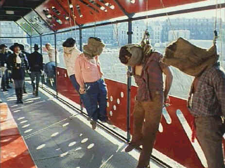

Image/1973/110m/Cropped 1.33
 |
Custer witnesses summary executions in Paris©Image |
At a meeting of
representatives of United States economic interests, it is clear that the Indians present
a obstacle to the country's western expansion. A meeting with General Terry is arranged
and Terry calls for the enthusiastic talents of George Armstrong Custer to mount a
campaign against the Indians. An anthropologist in modern dress keeps popping up and
asking questions as an instant reminder that something strange is going on here in Don't
Touch the White Woman!. The director himself fills this role, creating another layer
of filmmaking license. Soon, it is obvious that although many of the characters are
wearing period clothing, the plot is playing out in 1972 Paris. Not too subtle photos of
President Richard Nixon show up on walls in the background. But the players keep their
focus on 19th century events while the director and writer have other things in
mind.
Don't Touch the White Woman is transparently political in
its attack of the United States and the Nixon administration's involvement in Vietnam. The
annihilation of the American Indian and the expansionist policies of American colonial
ambitions are taken to task by director Ferreri. Though every scene is meticulously
composed, Ferreri's style appears improvisational. The camera has a cinema verite quality
and the mix of costumed players amidst the modern Parisian setting has quite a startling
effect. Though Absurdist in style and overall comic, there are devastating uses of extreme
violence that serve to remind audience that they can laugh all they want but the laughter
is hollow in the face of the underlying facts of history.
The important European cast is headed by Marcello Mastroianni in
a ridiculous long black wig as Colonel George Armstrong Custer. Mastroianni brings a new
meaning to chivalry in his bizarre posturing as Custer. When Custer salutes you with a
stamping of his feet it is positively orgasmic. Competing with Mastroianni for outrageous
performance bragging rights is Michel Piccoli as a drunk and fey Buffalo Bill. Philippe
Noiret is a practical General Terry and Catherine Deneuve serves as the angelic vision of
the white woman. Never mind if she beds Custer in a fit of lust.
There are a number of scenes that suffers from cropping to 1.33
from the what appears to be an original 1.66 composition. Color seems slightly coated by
the dusty outdoor sets in the center of a huge Parisian demolition and construction
project. The guerilla style of shooting does not produce glossy images and the resulting
grain on the DVD suits the material just fine. The mono soundtrack is thin but acceptable.
Yellow English subtitles appear on the image. This is a bare bones DVD with a menu
offering up only chapter stops .